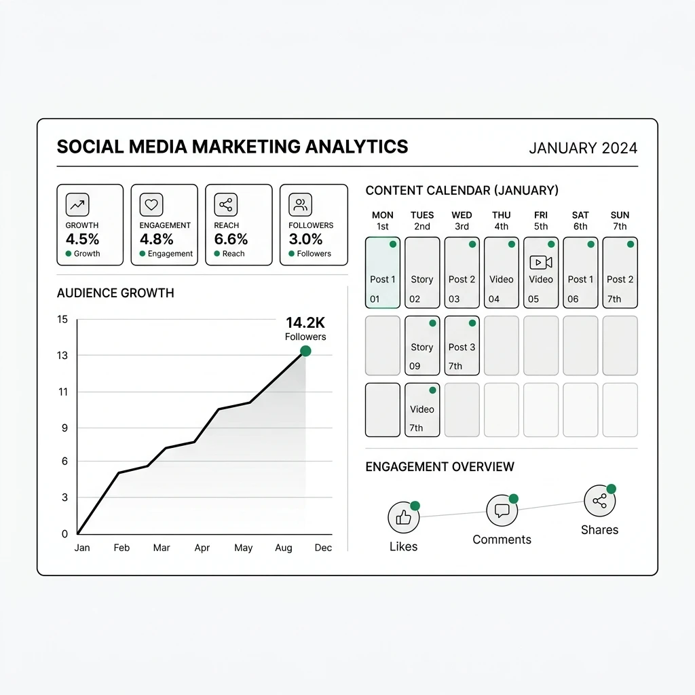

Organic Growth & Content Architecture
Data-Driven Social Media Marketing & Organic Growth Strategy
Random posting and superficial engagement metrics do not build sustainable enterprise value. We engineer structured, platform-specific content systems that translate your technical subject-matter expertise into market authority, audience trust, and qualified inbound inquiries.

The Real Challenge
Why Most Social Media Campaigns Fail
Without structured commercial alignment, social media efforts turn into time-consuming cost centers with zero verifiable revenue impact.
Superficial Vanity Metrics
Focusing on passive likes and bot followers creates an illusion of progress while failing to generate qualified customer inquiries or brand recall among decision-makers.
Generic, Clichéd AI Copy
Spamming generic AI-generated platitudes degrades executive credibility and repels sophisticated buyers who seek nuanced industry insight.
Unmeasured Attribution Gaps
Publishing without systematic UTM parameters or analytics conversion tracking makes it impossible to know which posts generate real opportunities.
Capabilities
Strategic Social Media Deliverables
We engineer content systems designed to build category leadership and channel qualified attention into conversion funnels.
Platform Content Architecture
Tailored editorial frameworks for LinkedIn, X (Twitter), Meta, and YouTube that leverage platform-native distribution algorithms without awkward cross-posting.
Editorial Calendars & Asset Creation
Bi-weekly content sprints featuring high-value thought leadership, technical teardowns, carousels, and product releases with dedicated brand visual templates.
Audience Engagement Loops
Proactive comment management, industry discussion participation, and executive outreach that embeds your brand into relevant peer networks.
Executive & Founder Ghostwriting
Transforming the lived experience and strategic perspectives of founders and CTOs into influential personal brand platforms that attract talent and deals.
Closed-Loop Conversion Tracking
Comprehensive UTM tagging hygiene, Google Analytics 4 event mapping, and multi-touch referral reporting to track lead progression from social click to signed contract.
Strategic Campaign Amplification
Deploying targeted sponsored post boosts on verified high-engagement organic posts to maximize reach against specific target account lists.
Our Process
Structured Social Growth Lifecycle
We replace erratic posting with a disciplined publishing engine centered on business value and verified market resonance.
Audience & Voice Audit
Analyzing competitor positioning, defining core ICP personas, and extracting your brand's unique narrative angles and voice guidelines.
Content Calendar Production
Drafting bi-weekly content sprints across educational, analytical, and product pillars, accompanied by custom branded visual assets.
Distribution & Engagement
Executing publishing schedules, actively participating in comment discussions, and nurturing warm inquiries into conversion funnels.
Attribution & Iteration
Reviewing referral traffic and pipeline metrics monthly, doubling down on top-performing topics, and refining editorial priorities.
Proven Applications
Strategic Applications Across Business Models
We tailor our social architecture to the commercial goals of technical companies.
Founder & Executive Authority
Positioning your leadership as insightful industry commentators on LinkedIn, driving enterprise partnership inquiries and inbound talent.
Feature Launch Amplification
Coordinating synchronized multi-platform announcements that drive immediate product signups and community discussions.
Case Teardowns & Proof Points
Deconstructing complex client challenges into engaging visual breakdown carousels that prove engineering competence before sales calls begin.
Common Inquiries
Frequently Asked Questions
Transparent answers regarding our social media methodologies, workflows, and commercial expectations.
How do you measure ROI from social media marketing instead of vanity metrics? ↓
We evaluate success using commercial indicators: inbound website referral traffic, qualified demo requests, email list signups, and UTM-tagged conversions in GA4, rather than prioritizing empty vanity follower counts.
Which social platforms should our business prioritize? ↓
Platform priority depends entirely on your buyer persona. For B2B software and advisory, LinkedIn and X (Twitter) drive the highest commercial leverage. For consumer brands, Meta (Instagram/Facebook) and visual storytelling deliver greater audience velocity.
How do you ensure content maintains our authentic technical brand voice? ↓
We conduct an intensive onboarding interview with your subject-matter experts to codify your technical terminology, tone of voice, and brand points. We avoid generic, unedited AI output and ensure every post delivers genuine insight.
What is the content review and approval process before publishing? ↓
We operate through bi-weekly content sprint batches. You receive a structured editorial calendar with copy, visual creatives, and scheduling dates for review and approval prior to distribution.
Do you manage paid social advertising (PPC) or focus on organic growth? ↓
Our core focus is organic authority, community loops, and high-converting editorial distribution. We also support targeted sponsored post amplifications to accelerate verified high-performing content.
Integrated Solutions
Frequently Paired Capabilities
Pair social distribution with our design and search optimization services for cohesive brand reach.
UI/UX Product Design & Systems →
Ensure landing pages and product funnels convert traffic originating from your social campaigns with high-converting, friction-free UX.
Technical SEO & Search Architecture →
Capture organic search demand generated by social brand awareness with green-tier Core Web Vitals and Schema.org entity graphs.
Ready to Build an Authentic Growth Engine?
Schedule a strategy session with our growth leads to audit your current channels and map your multi-platform distribution roadmap.